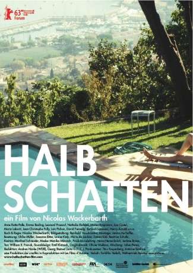
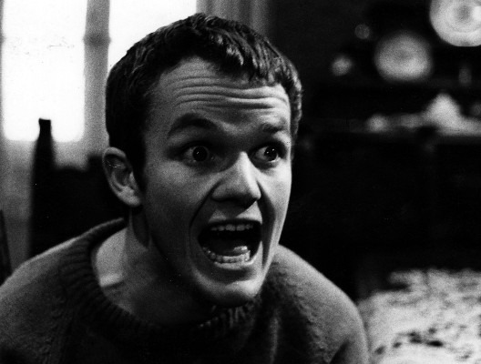

#8555 Halbschatten
 
 IMDB-Wertung: 5.5 / 10
IMDB-Wertung: 5.5 / 10  Metascore: 0
Metascore: 0 
Sommertage an der Côte d’Azur: Merle (Anne Ratte-Polle) folgt der Einladung ihres Geliebten Romuald dorthin, doch in dessen Haus trifft sie nur auf seine Kinder Emma (Emma Bading) und Felix (Leonard Proxauf), die von ihrem Verhältnis zum Vater nichts wissen. Ein leiser, aber hartnäckiger Kampf um den Status quo beginnt. Thriller über ereignislose Tage.
Jahr: 2013
Dauer: 74 Minuten
FSK: 0
Land: Deutschland Studio: Farbfilm-VerleihTonspuren:
Untertitel:
Auflösung: 720p (1280x720) Größe: 1218 MB
Genre: Drama
Regisseur: Nicolas Wackerbarth
Drehbuch: Oskar Blumenthal
Soundtrack: Olivier Mellano
Darsteller:
- Anne Ratte-Polle als Merle
- Leonard Proxauf als Felix
 Maren Kroymann als Johanna
Maren Kroymann als Johanna Nathalie Richard als Olga
Nathalie Richard als Olga-  Lou Castel als Daniel
- Henry Arnold als Romuald
- Emma Bading als Emma
- Soroosh Lavasani als Darian
- David Fennelly als Mat
- Laurent Pons als Hervé
- Geneviève Tenne als
- Maria Laborit als Shop Assistant
- Loïc Pichon als Patisseur
- Jean-Christophe Folly als Kalu
Datei: X:\2013(G-H)\Halbschatten (2013, FSK0, 1280x720).mkv seit 22.03.2018
Festplatte: HD 2012(N-Z)-2013(A-H)
 Es gibt insgesamt 43 Filme in der Gruppe '2013(G-H)'
Es gibt insgesamt 43 Filme in der Gruppe '2013(G-H)'